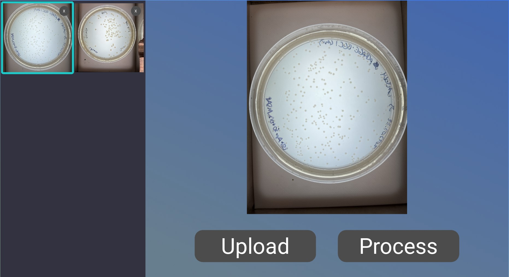

Are manual colony counting methods slowing down your research progress?
From Petri Dish to Data: Say Hello to Effortless Colony Counting.

Developed by: Owen Williamson, Johnny Li, Ryoga Ojima, Andres Perez, and Andrew Vester
Technical Support
Andres Perez - perezand@oregonstate.edu